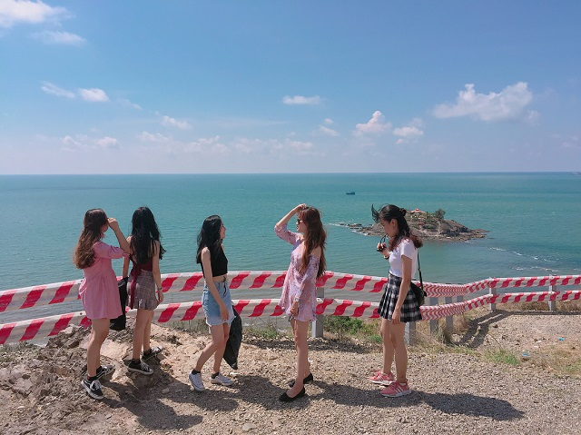
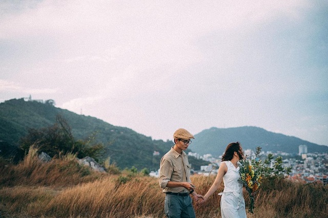

Khu Đồi Con Heo
Là một ngọn đồi hoang sơ đầy sỏi đá với những nét bí ẩn mà cuốn hút, Đồi Con Heo Vũng Tàu dần được khám phá và trở thành địa điểm check in cực chất cho các hội nhóm bạn bè, tạo nên những những bức ảnh sống ảo thần sầu. Đồi Con Heo là một trong những địa điểm góp phần làm nên vẻ đẹp du lịch hoang sơ khó cưỡng của mảnh đất Vũng Tàu, cùng khám phá xem Đồi Con Heo có gì mà được yêu thích vậy nhé!
ĐỒI CON HEO VŨNG TÀU – ĐỊA ĐIỂM SỐNG ẢO “ĐƯỢC LÒNG” GIỚI TRẺ
VÌ SAO ĐỒI CON HEO ĐƯỢC NHIỀU BẠN TRẺ CHECK-IN
Là ngọn đồi nhỏ nhô ra từ triền núi, đồi Con Heo này vốn dĩ để khai thác đá, nhưng chính vì thế đã vô tình tạo nên một vẻ đẹp vô cùng cuốn hút cho điểm đến này. Từ đó đồi Con Heo trở thành địa điểm du lịch và khám phá được yêu thích.
Toạ lạc ngay Bãi Sau Vũng Tàu, ngọn đồi hoang trọc và khá trơ trụi. Nhưng khi đứng từ trên cao, cả một Vũng Tàu đẹp như tranh được thu vào tầm mắt. Cung đường Thuỳ Vân, một góc đường Hạ Long và đảo Hòn Bà giữa biển thơ mộng và “đốn tim” bất kì ai.
Không những vậy, khi tiến đến khu vực gần mép đồi, từ đây bạn có thể chiêm ngưỡng bờ cát trải dài của Bãi Sau uốn lượn giữa biển trời xanh thẳm, tạo nên một cảnh quan vừa thanh bình lại vừa kỳ vĩ trước mắt.
Và có lẽ đó là lý do tại sao du khách đến với Đồi Con Heo đều sẽ truyền tai rằng đây dường như là địa điểm đẹp nhất để ngắm được toàn cảnh Vũng Tàu xinh đẹp. Cùng với Tượng Chúa Kito và Ngọn Hải Đăng trên núi nhỏ, đồi Con Heo cho bạn những bức ảnh đẹp chẳng kém trời Tây.
SỰ TÍCH ĐỒI CON HEO
Mang cái tên độc đáo và khá lạ kỳ là Đồi Con Heo, ngọn đồi này gắn liền với hai sự tích được truyền tai nhau:
Câu chuyện đầu tiên là ngày xưa có xóm nghèo nằm trên con đường mòn trên triền núi. Bình thường những đứa trẻ trong thôn xóm nghèo chỉ chăn gà chăn vịt trên ngọn đồi nhỏ nhô ra từ triền núi này. Bỗng nhiên vào một hôm trên mảnh đồi xuất hiện một con heo, và những đứa trẻ không ngừng kêu lên ngạc nhiên một cách vui vẻ “Đồi Con Heo, Đồi Con Heo”. Do đó là ngọn đồi này mới có cái tên ngộ nghĩnh đó.
Còn câu chuyện thứ hai là vì nằm ngay sát biển nên đứng từ trên cao của ngọn đồi thường thấy gió heo may xuất hiện, vì đồi trống nên người ta gọi là đồi Heo. Heo không phải là con heo mà mang ý chỉ là gió heo may, nhưng chính vì sự nhầm lẫn thú vị này mà cái tên Đồi Con Heo mới ra đời.
NÊN ĐẾN ĐỒI CON HEO VÀO MÙA NÀO?
Đồi Con Heo có cảnh vật thay đổi theo mùa. Bởi vậy mà đến Đồi Con Heo hai mùa mưa và mùa khô sẽ thấy sự khác biệt ngạc nhiên. Vào mùa mưa thì tràn trề nhựa sống khi đồi khoác màu xanh tươi của cây cối với ao nước trong veo nhỏ xinh. Vào mùa khô thì ngược lại, sỏi đá và màu cỏ úa lại tạo nên sự hoang sơ và độc đáo cho cảnh quan nơi đây.
Vậy nên đến vào bất cứ mùa nào, bạn đều cảm nhận được nét đẹp riêng mà Đồi Con Heo mang lại.
ĐỊA CHỈ ĐỒI CON HEO
Đồi Con Heo nằm ở địa chỉ Hẻm 222, Phường 2, Thành phố Vũng Tàu, Bà Rịa – Vũng Tàu. Đồi Con Heo toạ lạc ngay triền núi của bãi sau Vũng Tàu nên không hề khó để bạn tìm ra địa chỉ của ngọn đồi.